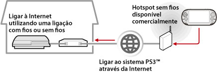

Rede > Utilizar a reprodução remota (através da Internet)
Utilizar a reprodução remota (através da Internet)
Para utilizar esta função num sistema PS Vita ou PSP™, poderá ser necessário actualizar o software do sistema PS3™ e do sistema PS Vita ou do sistema PSP™.
Utilizando um dispositivo compatível com reprodução remota, como um sistema PS Vita ou sistema PSP™, e um ponto de acesso sem fios, pode estabelecer ligação ao seu sistema PS3™ através da Internet. Para utilizar a reprodução remota, o sistema PS3™ deve ser definido para o modo de espera de ligação de reprodução remota.

Nota
O método para utilizar um serviço (LAN sem fios) hotspot sem fios disponível comercialmente e as tarifas de utilização variam dependendo do fornecedor do serviço. Para mais informações, contacte o fornecedor do serviço.
Preparar (1) (sistema PS3™ e dispositivo compatível com reprodução remota)
Para utilizar a reprodução remota pela primeira vez, o utilizador deve registar (emparelhar) o dispositivo compatível com reprodução remota, como um sistema PS Vita ou PSP™, com o sistema PS3™. Para registar (emparelhar) o sistema, seleccione  (Definições) >
(Definições) >  (Definições de Reprodução Remota) > [Registar o Dispositivo].
(Definições de Reprodução Remota) > [Registar o Dispositivo].
Preparar (2) (dispositivo compatível com reprodução remota)
Crie uma ligação de rede para ligar o sistema PS Vita ou PSP™ a um ponto de acesso. Para utilizar a reprodução remota através da Internet, pode utilizar um ponto de acesso sem fios. Para mais informações sobre as definições de rede num dispositivo compatível com reprodução remota, consulte o manual de instruções fornecido com o dispositivo.
Utilizar a reprodução remota num sistema PS Vita
1. |
No sistema PS3™, seleccione |
|---|
 (Rede) >
(Rede) >  (Reprodução remota).
(Reprodução remota).2. |
No seu sistema PS Vita, toque em |
|---|
 (Reprodução remota da PS3) > [Iniciar].
(Reprodução remota da PS3) > [Iniciar].3. |
Toque em [Ligar através da Internet]. |
|---|
Notas
- Se for ao ecrã de uma aplicação diferente durante a reprodução remota, a ligação de reprodução remota é fechada após 30 segundos.
- No seu sistema PS Vita, estabeleça uma hiperligação à conta Sony Entertainment Network utilizada no sistema PS3™. Se tiver criado uma conta no sistema PS Vita ou num computador, também pode utilizar essa conta no sistema PS3™.
Utilizar reprodução remota num sistema PSP™
1. |
No sistema PS3™, seleccione |
|---|---|
2. |
No sistema PSP™, seleccione |
3. |
Seleccione [Ligar através da Internet]. |
4. |
Na lista de ligações, seleccione a ligação para o ponto de acesso a ser utilizada para reprodução remota. |
5. |
Introduza a ID de início de sessão e a palavra-passe na Sony Entertainment Network da conta que está a ser utilizada. |
 (Reprodução remota).
(Reprodução remota).Utilizar a reprodução remota através da Internet
Poderá não ser possível utilizar a reprodução remota através da Internet dependendo do dispositivo de rede utilizado. Se tal acontecer, verifique as seguintes informações.
- Utilize [Teste de Ligação à Internet], em
 (Definições de Rede), em (Definições) para verificar se o sistema PSP™ pode estabelecer ligação à Internet e à PSNSM.
(Definições de Rede), em (Definições) para verificar se o sistema PSP™ pode estabelecer ligação à Internet e à PSNSM. - Se o router utilizado suportar UPnP, active a funcionalidade UPnP do router.
- Se o router utilizado não suportar UPnP, deve definir o reencaminhamento da porta do router, de modo a permitir a comunicação do sistema PS3™ com a Internet. O número da porta utilizada pela reprodução remota é TCP:9293. Para mais informações sobre a definição desta opção, consulte as instruções fornecidas com o router.
- O reencaminhamento da porta é uma funcionalidade para reencaminhar sinais que chegam a uma porta específica (entrada) para outra porta específica (saída). Também se designa por "mapeamento de portas" ou "conversão de endereços".
- Se o sistema PS3™ estiver ligado à Internet através de dois ou mais routers, a ligação pode não funcionar correctamente.
Notas
- Um router é um dispositivo que permite que vários dispositivos partilhem uma única linha de Internet.
- A comunicação poderá ser restrita dependendo das funcionalidades de segurança fornecidas pelo router e pelo fornecedor de serviços da Internet. Consulte as instruções fornecidas com o dispositivo de rede utilizado e as informações do fornecedor de serviços da Internet.